Code
import seaborn as sns # 导入 Seaborn 库⭕注意：预先下载 Seaborn 库
用 VS code (本地) 编辑 Jupyter Notebook 时，若想导入 Seaborn 库 (to import Seaborn library)，需要先下载库 (to install Seaborn library)，用以下代码下载最新版 Seaborn 库：
pip install seaborn用 Google Colab 编辑则无需下载。
import seaborn as sns # 导入 Seaborn 库import matplotlib.pyplot as plt # 导入 Matplotlib 库👆此处是导入 Matplotlib 库（Library）并将 matplotlib.pyplot 定义为 plt 短称，为了方便使用。
如果不使用短称，也可以直接通过使用完整路径来调用 Matplotlib 库，例如：
import matplotlib.pyplot # 从 matplotlib.pyplot 接口导入 Matplotlib 库
matplotlib.pyplot.plot(略) # 用 .plot() 函数画图
matplotlib.pyplot.show() # 用 .show() 函数展示画好的图表但不推荐这样用，更常见的方式是用 plt 作为 matplotlib.pyplot 的别名，这样更简洁：
import matplotlib.pyplot as plt # 从 matplotlib.pyplot 接口导入 Matplotlib 库，并给予短称 'plt'
plt.plot(略) # 用 .plot() 函数画图
plt.show() # 用 .show() 函数展示画好的图表mpl 是 matplotlib 的常用短称，是整个库的入口，包含很多子模块和工具，
适合做全局配置、修改底层属性，或使用高级的子模块（如色彩映射 cm、三维绘图等）。
plt 是 matplotlib.pyplot 的常用短称，主要用于快速创建和管理图表，
是一个更高层次的接口。如果仅需快速绘图和调整图表，仅用 plt 即可。
相关链接：matplotlib.pyplot 教程
df = sns.load_dataset('penguins') # 用 Seaborn 加载一个自带的示例 dataset —— 企鹅 datasetdf.info() # show info of df<class 'pandas.core.frame.DataFrame'>
RangeIndex: 344 entries, 0 to 343
Data columns (total 7 columns):
# Column Non-Null Count Dtype
--- ------ -------------- -----
0 species 344 non-null object
1 island 344 non-null object
2 bill_length_mm 342 non-null float64
3 bill_depth_mm 342 non-null float64
4 flipper_length_mm 342 non-null float64
5 body_mass_g 342 non-null float64
6 sex 333 non-null object
dtypes: float64(4), object(3)
memory usage: 18.9+ KB【float data】
length/depth…等 float data（浮点数），都是 decimal 数（小数）。
float (浮点数) 数据类型可以用来表示 ratio 或 interval data，此处的数据 (长度、质量等) 有 true zero（0代表“无”），所以是 ratio data；
如果是用浮点数表示的温度数据（18.5°、36.8°等），无 true zero (0°不代表“没有温度”)，则为 interval data
【object data】
species/island/sex… 等 object (对象) 数据都是 string（字符串）。
object 数据类型可以用来表示 nominal 或 ordinal data。
此处的 species (种类名称) 和 insland (岛名称) 是 nominal data；sex (性别) 是 ordinal data。
df.head() # show the first 5 rows of df| species | island | bill_length_mm | bill_depth_mm | flipper_length_mm | body_mass_g | sex | |
|---|---|---|---|---|---|---|---|
| 0 | Adelie | Torgersen | 39.1 | 18.7 | 181.0 | 3750.0 | Male |
| 1 | Adelie | Torgersen | 39.5 | 17.4 | 186.0 | 3800.0 | Female |
| 2 | Adelie | Torgersen | 40.3 | 18.0 | 195.0 | 3250.0 | Female |
| 3 | Adelie | Torgersen | NaN | NaN | NaN | NaN | NaN |
| 4 | Adelie | Torgersen | 36.7 | 19.3 | 193.0 | 3450.0 | Female |
df.tail() # show the last 5 rows of df| species | island | bill_length_mm | bill_depth_mm | flipper_length_mm | body_mass_g | sex | |
|---|---|---|---|---|---|---|---|
| 339 | Gentoo | Biscoe | NaN | NaN | NaN | NaN | NaN |
| 340 | Gentoo | Biscoe | 46.8 | 14.3 | 215.0 | 4850.0 | Female |
| 341 | Gentoo | Biscoe | 50.4 | 15.7 | 222.0 | 5750.0 | Male |
| 342 | Gentoo | Biscoe | 45.2 | 14.8 | 212.0 | 5200.0 | Female |
| 343 | Gentoo | Biscoe | 49.9 | 16.1 | 213.0 | 5400.0 | Male |
df.sample(5) # show 5 random rows (随机展示五个条目)| species | island | bill_length_mm | bill_depth_mm | flipper_length_mm | body_mass_g | sex | |
|---|---|---|---|---|---|---|---|
| 320 | Gentoo | Biscoe | 48.5 | 15.0 | 219.0 | 4850.0 | Female |
| 90 | Adelie | Dream | 35.7 | 18.0 | 202.0 | 3550.0 | Female |
| 247 | Gentoo | Biscoe | 47.8 | 15.0 | 215.0 | 5650.0 | Male |
| 152 | Chinstrap | Dream | 46.5 | 17.9 | 192.0 | 3500.0 | Female |
| 332 | Gentoo | Biscoe | 43.5 | 15.2 | 213.0 | 4650.0 | Female |
⭕注意：函数 (funcitno) v.s. 方法 (method)
df.info() df.head() df.tail() df.sample() 等都是对于 df 这个具体 DataFrame 对象的【方法 (method)】，其功能类似【函数 (function)】，但不是函数。method 是基于具体对象的，对具体对象做出改变，不可凭空调用。
例如，pd.read_csv() 是一个 Pandas 库中预先定义好的函数 (function)：
df = pd.read_csv('文件路径') # 读取 csv 文件而 df.sample() 是对 df 这个具体的 DataFrame 对象进行操作的方法 (method)：
df.sample(4) # 任意选取四行**
绘制柱状图
**
**
2.1 用 Seaborn 绘制基础柱状图
**
**
2.1.1 基础柱状图
**
# 用 Seaborn 绘制基础柱状图
sns.barplot(data=df, x='island', y='body_mass_g') #⭐1
plt.show()
# 👆调用 plt.show() 函数来展示 plot
# 也可以不写 plt.show()，jupyter notebook 或 google colab 会自动展示上面的图表
# 但画的图比较复杂时可能会在 output 里显示很多文字信息，因此最好每次都写 plt.show()
# ⭕【Barchart】
# 用 Seaborn 画 bar chart 时，默认输入的 x 轴值作为 category，y 轴值作为 amount
# 如果对于同一个 category，有多个 amount，则默认取平均值。可以通过修改【estimator参数】来改成别的值。
# ⭕【Error Bar】
# 黑色竖线是 error bar (误差线)。默认 sns.barplot() 函数中的【errorbar参数】 为 errorbar=('ci', 95)
# 意为使用 置信区间 (confidence interval) 公式计算误差 (error)，置信水平为 95% (“有 95% 的把握确定计算得出的结果就是误差区间”)。
# 默认 error bar 显示为一条黑线，可以通过设置 errcolor 和 errwidth 等参数来进一步设置 error bar。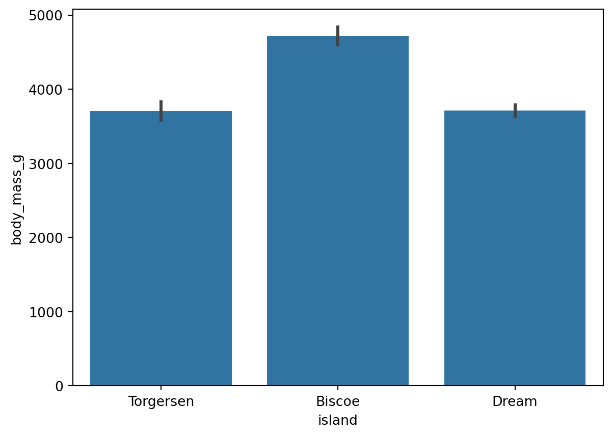
# 更改柱显示值为【总和】（默认为【平均值】）
sns.barplot(data=df, x='island', y='body_mass_g',estimator='sum')
#⭕【estimator参数】
# 默认 estimator='mean'，此处改成了 'sum' 来求每个岛上的企鹅总数
plt.show()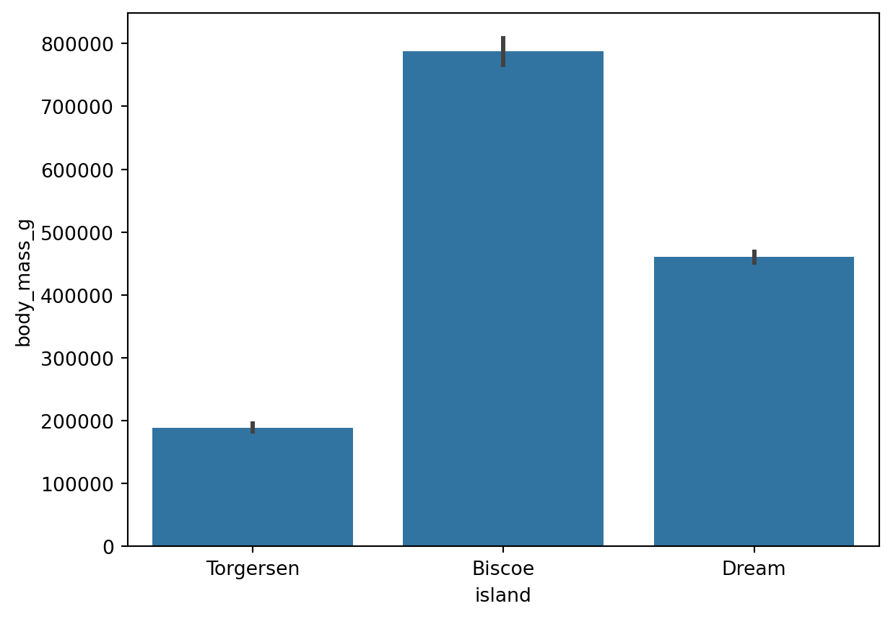
相关链接: sns.barplot() 函数的用法 (查看 estimator参数 的用法)
# 展示你当前使用的 Seaborn 库的版本号
sns.__version__
# Seaborn 0.12 版本中，默认生成 bar chart 是不同颜色的 bar
# 但是这种颜色区分其实是 visual distraction，是 big duck
# 因为通过 x 轴上的名称标签已经可以区分这三个 bar 了，无需再用颜色区分
# 所以 Seaborn 0.13 版本中改进了这一点，全部默认为蓝色 bar'0.13.2'# 求所有来自【Biscoe岛】的企鹅的【体质量】的平均值
df.loc[(df['island']=='Biscoe'), 'body_mass_g'].mean()
#⭕注意：
# 这个值，即为刚才画的图表中，【Biscoe】bar 在 y轴 上对应的值。
# 因为【Biscoe岛】这个 category 下的【体质量】amount 有多个数值，调用 sns.barplot() 函数画图时默认取了平均值，并显示了误差范围（黑线）。4716.017964071856**
2.1.2 Count Plot
**
# 绘制计数图表
sns.countplot(data=df,x='species')
# 不同于 Bar Plot 需要输入两个轴的数据，计数图表只需要输入一个轴的数据，
# 他会自动统计每个 category 出现的次数，作为另一个轴的数据。
# 此处自动统计了 “每个种类的企鹅分别出现的次数”。
plt.show()
相关链接： sns.countplot() 用法
**
2.2 柱分组 & 去除误差线
**
为了更好地展示信息，我们对 bar 进行分组，并去除 error bar (黑线)
# 为了更好地展示信息，我们对 bar 进行分组，并去除 error bar (黑线)
sns.barplot(data=df, x='island', y='body_mass_g',errorbar=('ci',0),hue='sex') #⭐2
plt.show()
#⭐2 在 ⭐1 的基础上，加入了两句 keyword argument：
# errorbar=('ci', 0) 和 hue='sex'
# 来设置 “误差线” 和 “色相” 两个参数
#⭕【errorbar参数】
# errorbar=('ci',0) 代表 “按照置信区间 (ci) 计算公式求误差范围，其中置信水平为 0% (即，完全不相信) ”，
# 而当置信水平为 0 的时候，置信区间的计算没有意义，没有误差范围。
# 即，没有 error bar。
#⭕【注意1】
# 此处完全可以直接设置 errorbar 参数为 errorbar=None，直接不计算误差范围（即，不显示黑线）。
#⭕【hue参数】
# hue='sex' 意为用颜色/色相 (hue) 对 df 中的 'sex' attribute (性别列) 进行分组，并自动生成图例 (legend)。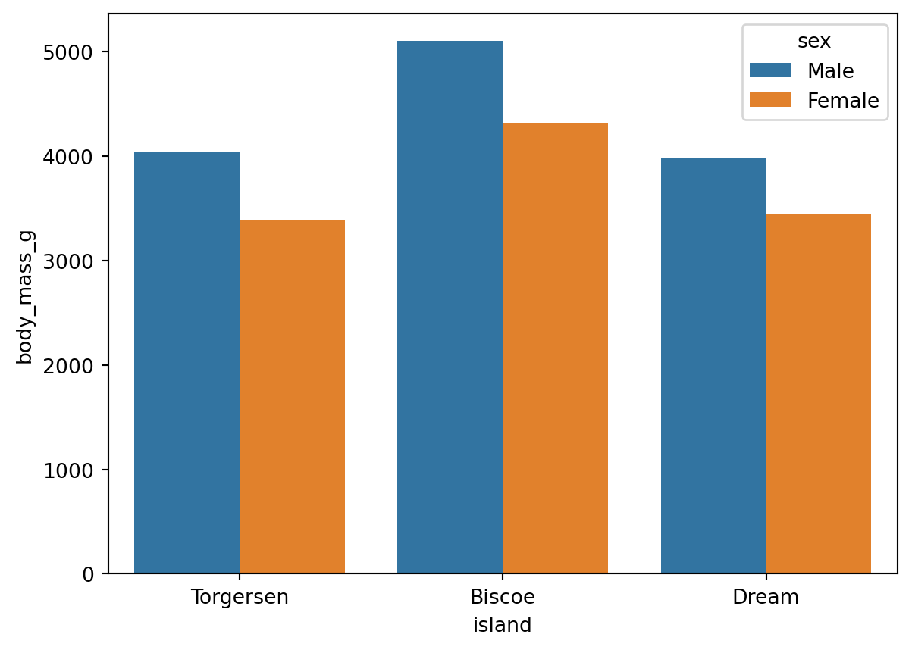
相关链接 * sns.barplot() 函数的用法 （查看 errorbar 参数 和 hue 参数 ）
**
2.3 旋转刻度标签
**
当 categories 的名称 (岛名称，即当前x轴刻度名称) 过长且密集时，可以旋转刻度名称：
# 用 Matplotlib 库，让现在 x 轴的刻度标签(数字)分别旋转 45°
sns.barplot(data=df, x='island', y='body_mass_g',errorbar=('ci',0),hue='sex') #⭐2
plt.xticks(rotation=45, ha='right')
# 【rotation参数】旋转的角度数，默认逆时针旋转。
# 【ha参数】horizontal alignment (水平对齐) 的缩写，ha='right' 意为刻度标签的右端与刻度线对齐。
# 详见链接 plt.xticks() 函数用法中，对于【kwargs】(keyword argument) 栏目的介绍
plt.show()
相关链接：
* plt.xticks() 函数用法 （ kwargs (keyword argument) 栏目中写了如何旋转刻度标签）
然而，根据 Wilke (2019, chap. 6.1) 的主张，旋转的文字刻度并不方便阅读。对于 category 多且密集的表格，他建议让表格横过来排版:
# 在 ⭐2 的基础上，交换 xy 轴的数据，使表格横过来
sns.barplot(data=df, y='island', x='body_mass_g',errorbar=None,hue='sex') #⭐3
#⭕注意：
# xy 轴的 data 交换后，Seaborn 默认让 nominal data (此处为岛的名称)
# 当 category，让 ratio data (此处为体质量) 当 amount；
# 而非仍然默认 x轴 为 category ，y轴 为 amount。
plt.show()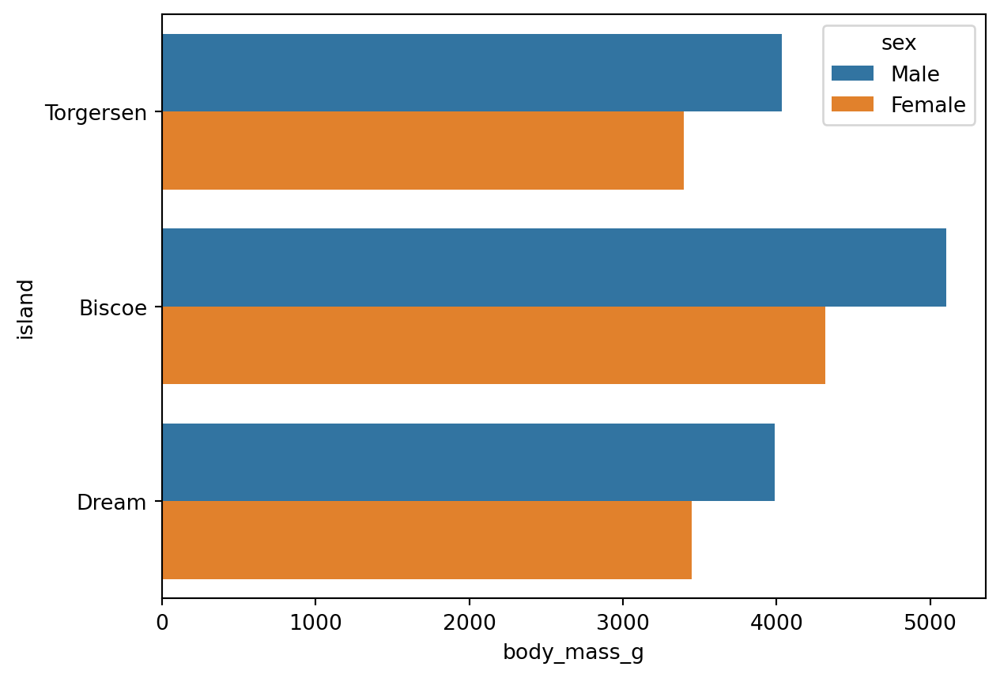
但我们作图的时候并非必须要遵循 Wilke (2019) 的主张，也可以让刻度倾斜。
以上技巧同样适用于计数图表 (Count Plot)：
# 以上技巧同样适用于 Count Plot
sns.countplot(data=df, y='species', hue='sex')
# 直接让 y轴 当 categories，并根据性别按照颜色分组。
# 此时 x轴 代表 “每种企鹅出现的次数”
plt.show()
**
2.3 设置总主题风格
**
# 设置 Seaborn 绘图的总主题风格
sns.set_theme(font_scale=1.2, style='darkgrid')
# 字号 1.2，风格深色带网格。
# ⭕注意：sns.set_theme() 是 Seaborn 的一个全局函数，针对接下来所有用 Seaborn 画的图，而不是仅限于此代码块；
# 而 ax.set() 等方法（下文提到），仅针对 ax 这个具体的图表。sns.set_theme() 函数一般用于可视化项目最开始的时候设置全局绘图主题。
如果想要恢复初始主题，可以直接调用 sns.reset_orig() 函数恢复全局默认设置。
# 在新主题风格下用 Seaborn 画图
ax = sns.barplot(data=df, y='island', x='body_mass_g',errorbar=None,hue='sex') #还是⭐3，但定义了变量 ax，为了方便下一行 ax.set() 操作
# 然后，用 Matplotlib 库中的 ax.set() 方法 (method) ，给刚画的图表设置标题、标签等元素
ax.set(title='Penguin', xlabel='Body Mass (g)', ylabel='Island')
plt.show()
⭕注意1：
👆此处的 ax 变量是一个用 Seaborn 生成的 Axes 对象（即，含有多个轴的图表对象）。
把用 Seaborn 生成的一个具体图表 (具体 Axes 对象) 定义为 ax 变量之后，可以利用其他库 (比如 MatPlotLib) 再进行后续操作。
此操作类似于给特定的 DataFrame 对象设置为 df 变量，然后再用具体的 方法 (method) 对 df 进行操作。
⭕注意2：
不要将 Matplotlib 库 中基于具体图表 (具体 Axes 对象) 的 ax.set() 方法 和 Seaborn 库 中的 sns.set() 函数 混淆。
sns.set() 和 sns.set_theme() 是 Seaborn 库中，完全一致的函数，sns.set() 只是 sns.set_theme() 的别称罢了 (为了方便书写)。
其中，sns.set_theme() 是该函数的首选接口 (preferred interface)。该函数用来设置 Seaborn 的全局主题风格。
ax.set() 是 Matplotlib 库中，基于具体图表对象的一个方法 (method)，用来修改具体图表对象。
相关链接：
sns.set() 函数
sns.set_theme() 函数
ax.set() 方法
**
2.4 调整图例
**
【拓展】errorbar 参数 设置对于图例位置的影响：
# errorbar 不存在
ax = sns.barplot(data=df, y='island', x='body_mass_g',errorbar=None,hue='sex')
ax.set(title='Penguin', xlabel='Body Mass (g)', ylabel='Island')
plt.show()
# ⭕注：error bar 不存在，图例自动生成在右边
# errorbar 存在，但大小为0
ax = sns.barplot(data=df, y='island', x='body_mass_g',errorbar=('ci',0),hue='sex')
ax.set(title='Penguin', xlabel='Body Mass (g)', ylabel='Island')
plt.show()
#⭕注：error bar 存在但为 0，图例生成时自动避免了遮挡 error bar
不论 errorbar=('ci',0) 还是 errorbar=None，上图中的图例 (legend) 对柱状图都有所遮挡，需要调整图例的位置。
# ⭐3
ax = sns.barplot(data=df, y='island', x='body_mass_g',errorbar=None,hue='sex')
ax.set(title='Penguin', xlabel='Body Mass (g)', ylabel='Island')
# 在 ⭐3 基础上加了一句函数调整图例位置大小
sns.move_legend(ax,bbox_to_anchor=(0.5,-0.2),loc='upper center',ncols=2)
#⭕【obj参数】
# obj 参数是 sns.move_legend() 函数括号内的第一个参数。
# 它是一个图表对象，作为需要移动图例的源图表对象，此处为 ax。
#⭕【loc参数】
# Seaborn 中此处的 loc参数 默认可以为 字符串 (str) 或 整数 (int)。
# 默认的字符串有 'upper left' 'upper center' 'down right' 等，
# 让图例自动位于图表的左上角、上部居中、右下角等位置。
#⭕【注意】
# 只设置了 loc参数 而不设置 bbox_to_anchor参数 时，loc 参数 代表 “图例位于整个图表的 XX (e.g. 右上角)”
# 而当同时设置了 loc参数 和 bbox_to_anchor参数 时，loc参数 代表 “图例的 XX (e.g.右上角) 位于整个图表的 (x,y) 位置”
#⭕【bbox_to_anchor参数】
# 用边界框来固定 (use a bound box to anchor the legend)。必须和 loc参数联用。
# 可以设置二元数组 (x,y) 或四元数组 (横坐标,纵坐标,宽度,高度)，此处只用了二元数组。
# 此处 bbox_to_anchor=(0.5,-0.2) 和 loc='upper center' 联用，
# 意为 “让图例的上边缘中点，位于整个图表的 (0.5,-0.2) 位置”。
#⭕【ncols参数】
# 图例的列数 (The number of columns that the legend has)，默认为 1
# 此处只有 male 和 female 两个组，最多分两列。
plt.show()
# 同上
ax = sns.barplot(data=df, y='island', x='body_mass_g',errorbar=None,hue='sex')
ax.set(title='Penguin', xlabel='Body Mass (g)', ylabel='Island')
# 只设置 loc参数 而不设置 bbox_to_anchor参数
sns.move_legend(ax,loc='lower right')
# 意为 “让图例位于整个图表的右下角”
plt.show()
# 同上
ax = sns.barplot(data=df, y='island', x='body_mass_g',errorbar=None,hue='sex')
ax.set(title='Penguin', xlabel='Body Mass (g)', ylabel='Island')
# bbox_to_anchor参数 和 loc参数 联用
sns.move_legend(ax,bbox_to_anchor=(1,1),loc='upper left')
# 意为 “让图例的左上角位于整个图表的 (1,1) 位置”
plt.show()
相关链接：
sns.move_legend() 用法 （查看 obj参数 和 loc参数 的用法）
matplotlib.axes.Axes.legend() 用法 （查看 loc参数 ，ncols参数 和 bbox_to_anchor参数 的用法）
**
2.5 修改颜色
**
为了美观与直观，我们可以修改图表的颜色（但注意不要形成 big duck）。
可以使用 Seaborn 库中预设的调色盘 (predifined Seaborn palettes)，或者手动输入十六进制颜色代码 (hexadecimal colour codes)。
#【⭐4】默认初始 Seaborn 颜色方案
ax = sns.barplot(data=df, y='island', x='body_mass_g',errorbar=None,hue='sex')
ax.set(title='Penguin', xlabel='Body Mass (g)', ylabel='Island')
sns.move_legend(ax,bbox_to_anchor=(1,1),loc='upper left')
plt.show()
# ⭐4 的基础上，增加了 palette='flare' （'flare' 是 Seaborn 的预设颜色方案名称之一）
ax = sns.barplot(data=df, y='island', x='body_mass_g',errorbar=None,hue='sex', palette='flare')
ax.set(title='Penguin', xlabel='Body Mass (g)', ylabel='Island')
sns.move_legend(ax,bbox_to_anchor=(1,1),loc='upper left')
plt.show()
# Seaborn 预设颜色名称：'blue' 和 'orange'
ax = sns.barplot(data=df, y='island', x='body_mass_g',errorbar=None,hue='sex', palette=['blue','orange'])
ax.set(title='Penguin', xlabel='Body Mass (g)', ylabel='Island')
sns.move_legend(ax,bbox_to_anchor=(1,1),loc='upper left')
plt.show()
# 十六进制颜色代码：'#a1c9f4' 和 '#8de5a1'
ax = sns.barplot(data=df, y='island', x='body_mass_g',errorbar=None,hue='sex', palette=['#a1c9f4','#8de5a1'])
ax.set(title='Penguin', xlabel='Body Mass (g)', ylabel='Island')
sns.move_legend(ax,bbox_to_anchor=(1,1),loc='upper left')
plt.show()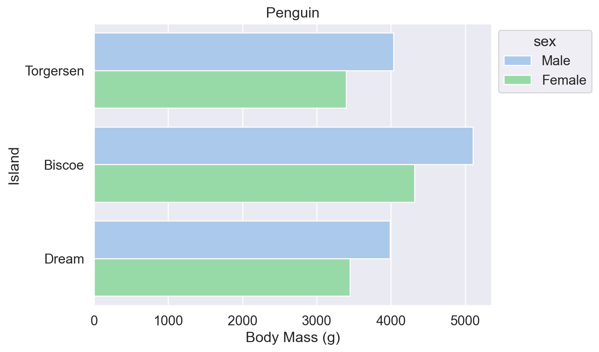
sns.barplot() 函数中的 palette 参数可以是:
1. Seaborn 的预定义调色板 (palette) 名称，可以直接通过名称调用，分别为：
> ‘deep’： 一种深色调的调色板，适合区分度高的颜色。(默认为 ‘deep’)
> ‘muted’： 柔和的颜色，适合低对比度的图表。
> ‘bright’： 鲜艳的颜色，适合强调某些重要信息。
> ‘pastel’： 柔和且淡雅的色调，适合平缓的展示。
> ‘dark’： 深色系调色板，适合与较暗的背景搭配。
> ‘colorblind’： 设计时考虑了色盲友好的配色，保证对不同色盲类型的用户依然可读。2. Matplotlib Colormap 的名称
Seaborn 库允许使用 Matplotlib 库的内置渐变色图 (colormap) 名称。Matplotlib 提供了多种配色方案，如：
>‘viridis’： 一个色盲友好的配色渐变，从深紫到亮黄。
>‘plasma’： 从深紫到亮黄色的渐变。
>‘coolwarm’： 从冷色到暖色的渐变。
>‘Blues’、‘Reds’： 单色的不同明暗度的渐变。使用这些 colormap 名称，颜色会按数据值的范围进行渐变显示。
3. ‘hls’ 或 ‘husl’
>这两种表示法使用 HLS 颜色模型 (Hue-Lightness-Saturation)，表示颜色的色相、亮度和饱和度。
>>‘hls’： 标准的 HLS 模型，用于在色调之间平滑过渡。
>>‘husl’： 将 HLS 模型改进为等感知度，保证色彩在感知上的均衡。
> >注：通常叫作 HSL 颜色模型 (Hue-Saturation-Lightness)，但 Seaborn 中写作 hls。4. ‘ch:<cubehelix arguments>’
>‘cubehelix’ 是一种颜色渐变方案，可以通过参数自定义颜色的范围、亮度等。
>例如，palette='ch:s=0.5,r=-0.5'可以控制渐变中的色彩饱和度 (s: saturation) 和旋转方向 (r: rotation)。
>cubehelix 配色方案的特点是色盲友好，并且可用于灰度模式下的打印。5. ‘light:<color>’, ‘dark:<color>’
>这些表示法允许从给定颜色生成更浅或更深的版本。可以填写颜色名称或者十六进制颜色代码。
>比如：palette='light: Blue'意为生成浅蓝色调；
>palette='dark:#ff5733'意为生成给定颜色的深色版本。6. ‘blend:<color1>,<color2>’
>用于将两种颜色混合，形成一个新的调色板。例如：
>palette='blend:Red,Blue'意为混合红色和蓝色生成中间过渡色调；
>palette='blend:#ff5733,#33c5ff'意为使用具体的十六进制颜色混合。7. 其它形式的 Matplotlib 兼容的颜色代码序列，如：
>十六进制颜色代码：例如palette=['#FF5733', '#33FF57', '#3357FF']
>RGB 或 RGBA 元组：例如palette=[(1.0, 0.0, 0.0), (0.0, 1.0, 0.0), (0.0, 0.0, 1.0)]
>Matplotlib 颜色名称：例如palette=['red', 'green', 'blue']
相关链接：
Seaborn sns.set_theme() 函数 （查看 palette参数 ）
Seaborn sns.color_palette() 函数 （查看 palette参数 预设调色盘名称表）
Matplotlib 预命名颜色一览
Matplotlib Colormap 一览
Matplotlib Colormap 使用介绍
w3schools 颜色提取器 （查看任意颜色的十六进制代码）
(以便后续画 “不同岛屿上的企鹅总量” 柱状图时，根据企鹅总量大小进行 sort)
法1: Pandas df.groupby() 函数和 .size() 函数
#【法1】Pandas df.groupby() 函数和 .size() 函数
df.groupby('island').size()
#👆根据 'island' 列进行分组，同一个岛的所有行都分为一组。分组后得到一个 groupby object。
# 再用 .size() 函数求该 groupby object 的数据大小。island
Biscoe 168
Dream 124
Torgersen 52
dtype: int64法2: Pandas df.value_counts() 函数
#【法2】Pandas df.value_counts() 函数
df.value_counts('island')
# 直接用 .value_counts() 函数求 'island' 列内【每种】数据的数量。
# 如下，Biscoe 是一种数据，island
Biscoe 168
Dream 124
Torgersen 52
Name: count, dtype: int64**
绘制其他图
**
**
3.1 点线图
**
为了避免在视觉上误导读者，柱状图的 amount 必须从 0 开始。因为根据直觉，每根柱子的面积应当显示了该种类对象的总量；柱状图应当直观体现不同类别总量之间的数量关系（比如，A地的企鹅总量是 B地的企鹅总量的 2倍，则 A柱 应该是 B柱 的两倍高）。同理，饼状图、柱状图等展示比例的图表应当避免使用 3D 图表，而应当使用 2D图表 (俯视)，因为 3D 图表改变观测角度之后，读者实际看到的图形面积比例并非真正的数据值比例，这样不够直观。这一原则被 Wilke (2019, chap.17) 称为 “The principle of proportional ink” 。
而点线图则不必从 0 开始，点线图的点只展示柱状图中最高点的值。下图中自动生成的点线图即从 3250 开始。
点线图的另一个优点是，比起柱状图，点线图的 data-ink ratio 更高，即，有效信息量占据图表总信息量（总 ink 量）的比例更高，干扰信息更少。
（但柱状图的优点是能直观展示数量比例，需要根据具体实例选择用哪种图表）
# 用 sns.pointplot() 函数画点线图
sns.pointplot(data=df, x='island', y='body_mass_g', hue='sex',linestyle='none')
#⭕注意：
# 也可以不写 linestyle='none'，而写 join=False，意为不显示点与点之间的折线。
# 但是，join 参数将在 v0.15.0 版本的 Seaborn 库中被移除，建议使用 linestyle='none'
# 图中每个点上下的线是误差线
plt.show()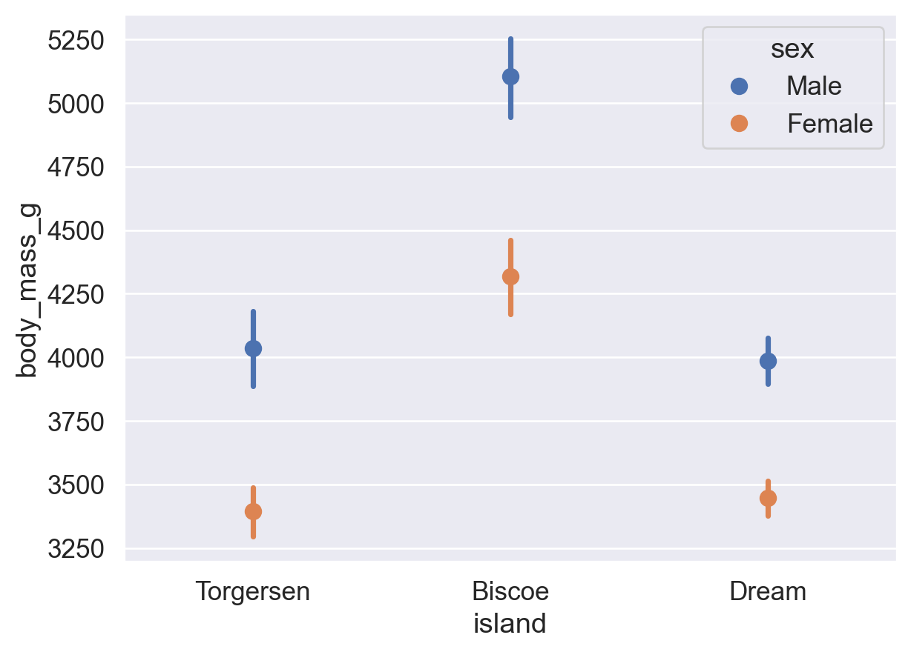
此处的 category 数据为不同的岛屿，是 nominal 而不是 ordinal 数据，不同岛屿名称之间没有联系，因此不必展示点之间的连线。
相关链接：sns.pointplot() 函数用法
**
3.2 直方图
**
柱状图 (bar chart) 的 x轴 一般是离散的几种数据类别 (discrete data categories)，其数据类型一般是 norminal 或 ordinal；而直方图 (histogram) 的 x轴 是连续的数据区间 (continuous data range)，数据类型是 ratio。
# 用 sns.histplot() 函数画直方图
sns.histplot(data=df, x='flipper_length_mm') # x: 鳍长(mm)
plt.show()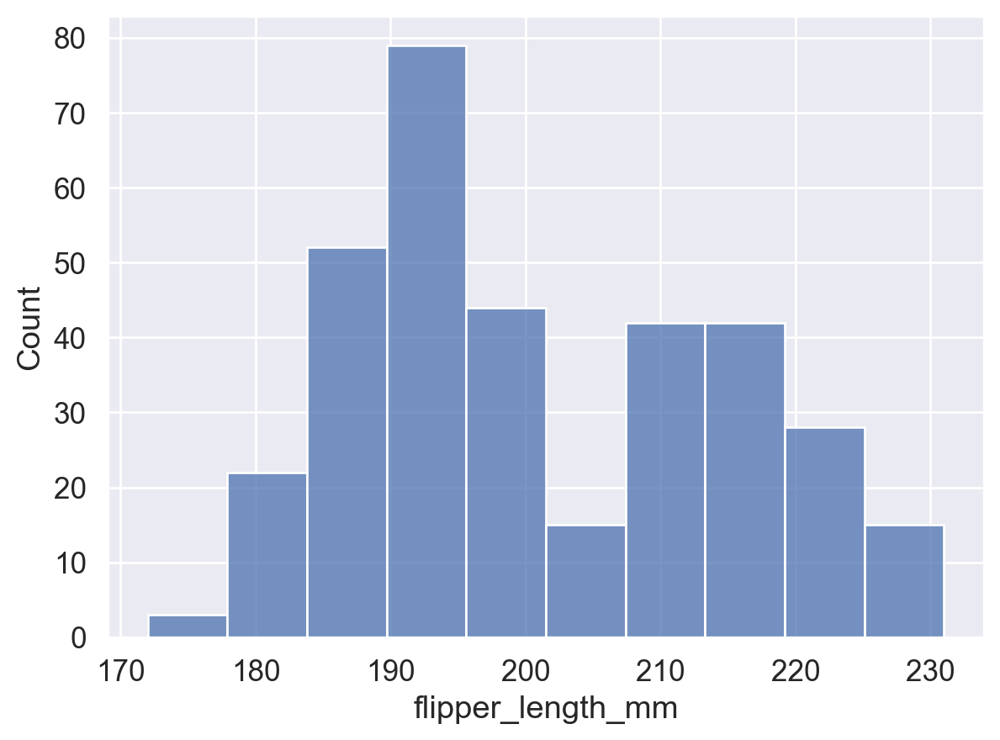
# 增加 hue 参数设置
sns.histplot(data=df,x='flipper_length_mm'
,hue='island' # 按照岛屿进行颜色分组。
# 相当于每个岛屿内的企鹅单独画了一个 histogram，
# 再将四个 histogram 重叠了起来。
)
# 注意纵坐标值范围，已产生变化。
plt.show()
#【1】原直方图
sns.histplot(data=df, x='flipper_length_mm')
plt.show() #👈展示第一个直方图 (原直方图)
#【2】增加 hue 参数设置后的直方图
sns.histplot(data=df,x='flipper_length_mm'
,hue='island'
)
# 可以通过设置 plt.ylim() 函数来调整 y 轴的刻度值范围，让两张图刻度范围一样，来观察区别
plt.ylim(0,80)
plt.show() #👈展示第二个直方图

sns.histplot(data=df, x='flipper_length_mm'
,hue='island' # 按照岛屿进行颜色分组
,stat='density' # 使 bins 面积之和为 1，表示概率密度。
,common_norm= False # 对整个每个组（每个岛屿）的数据单独进行归一化处理，下文会解释
)
plt.show()
**
3.2.1 stat 参数
**
填写字符串值。用于调整绘制直方图时所使用的统计方法。
stat 参数可以填写：
* ‘count’
* ‘frequency’
* ‘probability’ 或 ‘proportion’
* ‘percent’
* ‘density’
1. 'count'
每个分箱 (bin) 的【高度】等于【该分箱中数据点的数量】(count，又称“频数”)。
这是最基本的直方图类型，每个条形表示有多少数据点落入该分箱。
* 例如:
在第一个直方图 sns.histplot(data=df, x='flipper_length_mm') 中，鳍长为180-185mm区间内 (一个bin单位的区间) 的企鹅共有22只，则该 bin 的高度为22。
注: 实际上此图自动生成的 bin 区间并不是正好 180-185mm，真正的区间长度约为 5.9mm，此处为了方便演示，估算为 5mm。以下例子都是估算值。
#⭕【1】stat='count'
ax = sns.histplot(data=df, x='flipper_length_mm',stat='count')
# 在每个条形上显示 bin 的【高度 (计数)】，此处仅为了方便展示，不用管下面的代码是什么意思。
for p in ax.patches:
height = p.get_height() # 获取条形高度
ax.text(p.get_x() + p.get_width() / 2, height, int(height), # int() 取整
ha='center', va='bottom') # 在每个条形顶部显示高度
plt.show()
2. 'frequency'
每个 bin 的【高度】等于【该 bin 中的数据点数量】除以【该 bin 的宽度区间】。即，bin 高度 = 单位宽度区间内的数据点数量。
通过 bin 宽度区间来标准化数据点数量，可以用于处理 bin 宽度不统一的直方图。
* 例如:
鳍长为180-185mm区间内 (宽度为5) 的企鹅共有22只，则该 bin 的高度为22/5=4.4。
注： 真正高度约为 22/5.9，约为3（如图）。
#⭕【2】stat='frequency'
ax = sns.histplot(data=df, x='flipper_length_mm',stat='frequency')
# 在每个条形上显示 bin 的【高度】
for p in ax.patches:
height = p.get_height() # 获取条形高度
ax.text(p.get_x() + p.get_width() / 2, height, int(height), # int() 取整
ha='center', va='bottom') # 在每个条形顶部显示高度
plt.show()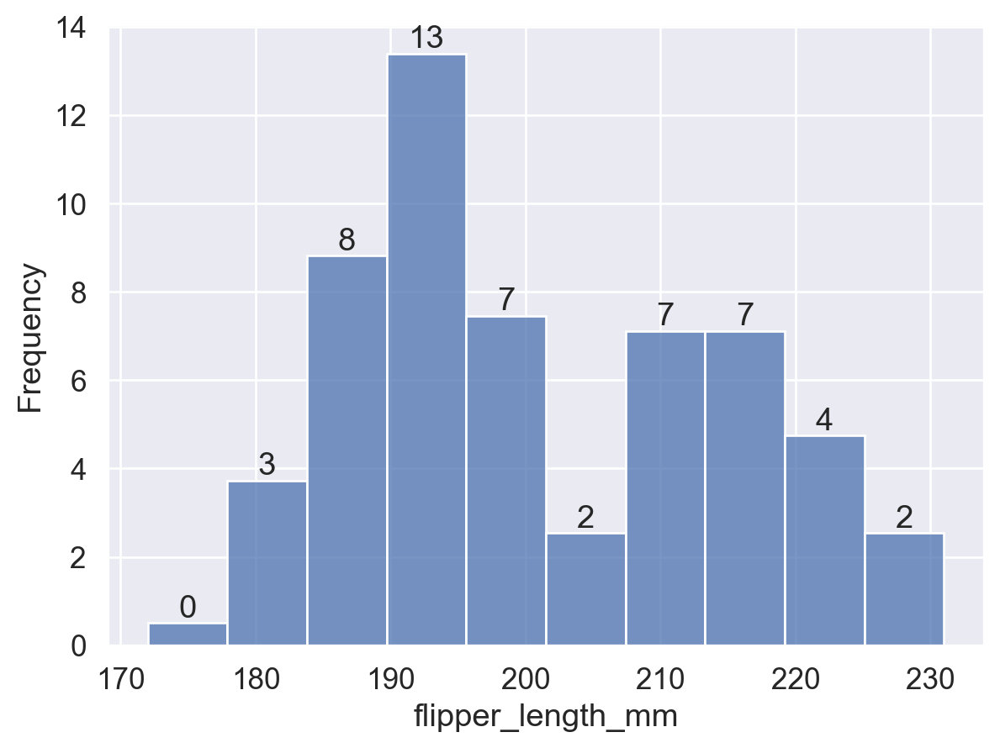
3. 'probability' 或者 'proportion'
归一化直方图，使所有 bin 的【高度】加起来为 1。
每个 bin 中的数据点数量除以总的数据点数量，从而表示每个分箱的数据比例。
* 例如:
总共有344只企鹅，鳍长为180-185mm区间内有22只企鹅，则该 bin 的高度为22/344=0.064
#⭕【3】stat='probability'
ax = sns.histplot(data=df, x='flipper_length_mm',stat='probability')
# 在每个条形上显示 bin 的【高度】
for p in ax.patches:
height = p.get_height() # 获取条形高度
ax.text(p.get_x() + p.get_width() / 2, height, f'{height:.2f}', # f'{}' 保留小数点后两位
ha='center', va='bottom') # 在每个条形顶部显示高度
plt.show()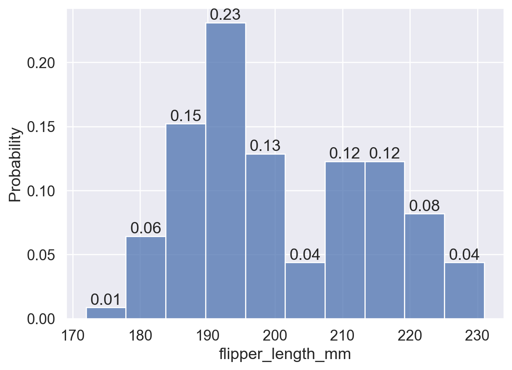
4. 'percent'
归一化直方图，使所有条形的【高度】加起来为 100。
将每个分箱中的数据点数量转换为百分比。
* 例如:
总共有344只企鹅，鳍长为180-185mm区间内有22只企鹅，则该 bin 的高度为(22/344)*100=6.4，
即，鳍长为180-185mm区间内的企鹅数量占据总企鹅数量的 6.4%
#⭕【4】stat='probability'
ax = sns.histplot(data=df, x='flipper_length_mm',stat='percent')
# 在每个条形上显示 bin 的【高度】
for p in ax.patches:
height = p.get_height() # 获取条形高度
ax.text(p.get_x() + p.get_width() / 2, height, int(height), # int() 取整
ha='center', va='bottom') # 在每个条形顶部显示高度
plt.show()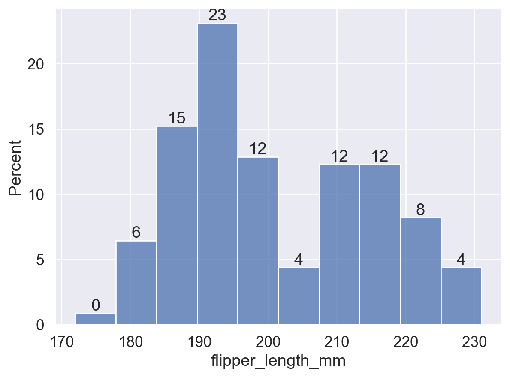
⭐5. 'density'
归一化直方图，使条形总面积等于 1。此图称为 “频率分布直方图”，高中学的。
bin高度 = 频率密度 = 频率 / 组距 = 【bin内数据量/总数据量】/【bin宽度】
这样，每个 bin 的面积即为该 bin 内数据量的频率，全图所有 bin 的面积总和为 1。
这种方式的直方图常用于估计概率密度函数。
* 例如:
总共有344只企鹅，鳍长为180-185mm区间内有22只企鹅，则该 bin 的高度为 22/(5*344)=0.013* 拓展：
当频率分布直方图的 bin 宽度无限趋近于 0 时，所有 bin 的最高点将连成一个光滑曲线——总体密度曲线，也就形成了密度图。
#⭕【5】stat='density'
ax = sns.histplot(data=df, x='flipper_length_mm',stat='density')
# 在每个条形上显示 bin 的【高度】
for p in ax.patches:
height = p.get_height() # 获取条形高度
ax.text(p.get_x() + p.get_width() / 2, height, f'{height:.3f}', # f'{}' 保留小数点后三位
ha='center', va='bottom') # 在每个条形顶部显示高度
plt.show()
**
3.2.2 common_norm 参数
**
common_norm 是一个布尔参数（True 或 False），用于控制是否在数据归一化时对整个数据集进行统一处理，默认为 True。
即，当 stat 参数为 'probability' , 'proportion' , 'percent' 或 'density' 时，common_norm 参数才能发挥作用。
当 common_norm=True 时，归一化会针对 整个数据集 进行处理。这意味着在分组（例如通过 hue 参数）进行绘图时，所有组的直方图将共享同一个归一化标准。这样，直方图的条形高度可以直接在不同组之间比较，因为归一化基于整个数据集。
当 common_norm=False 时，归一化会针对 每个子组 单独进行。这意味着每个组的直方图会各自归一化，条形高度的比例仅在同一组内有意义，但不适用于不同组之间的比较。
# common_norm = True
sns.histplot(data=df, x='flipper_length_mm'
,hue='island' # 按照岛屿进行颜色分组
,stat='density' # 使 bins 面积之和为 1，表示概率密度。
,common_norm=True # 对整个数据集（所有组）进行归一化处理。即，所有颜色的 bins 面积总和为 1。
# 注：bins 都是默认半透明的，三组分布重叠在一起。
)
plt.show()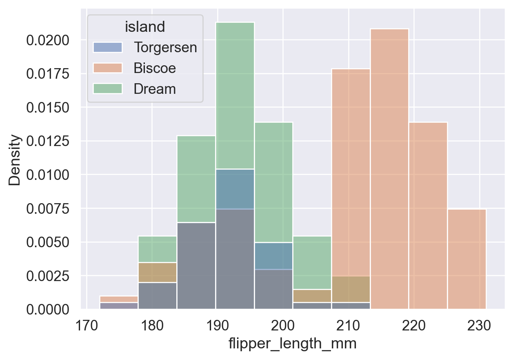
# common_norm = False
sns.histplot(data=df, x='flipper_length_mm'
,hue='island' # 按照岛屿进行颜色分组
,stat='density' # 使 bins 面积之和为 1，表示概率密度。
,common_norm=False # 对每个组（岛屿）单独进行归一化处理。
# 即，每种颜色的 bins 面积之和分别为 1，
# 即，所有蓝色的 bins (Torgersen岛) 面积总和加起来为 1；
# 所有橘黄色 bins (Biscoe岛) 面积加起来为 1；
# 所有绿色 bins (Dream岛) 面积加起来也为 1。
)
plt.show()
⭕拓展：
当组数较多时，用颜色分组后，不同组别的分布图重叠在一起，可能并不直观。可以选择每个组单独做一个分布图。
可以通过 data=df[df['特定列']==特定值] 来筛选想要画图的【行】。
如：data=df[df['island']=='Torgersen'] 意为 “选出所有在 Torgersen 岛上的企鹅 (所在的行)，作为数据进行绘图”
# 分布图1：Torgersen 岛上所有企鹅根据鳍长的分布情况
ax = sns.histplot(data=df[df['island']=='Torgersen'], x='flipper_length_mm',stat='density')
ax.set(title='Torgersen', xlabel='Flipper Length (mm)')
plt.show()
# 分布图2：Biscoe 岛上所有企鹅根据鳍长的分布情况
ax = sns.histplot(data=df[df['island']=='Biscoe'], x='flipper_length_mm',stat='density')
ax.set(title='Biscoe', xlabel='Flipper Length (mm)')
plt.show()
# 分布图3：Dream 岛上所有企鹅根据鳍长的分布情况
ax = sns.histplot(data=df[df['island']=='Dream'], x='flipper_length_mm',stat='density')
ax.set(title='Dream', xlabel='Flipper Length (mm)')
plt.show()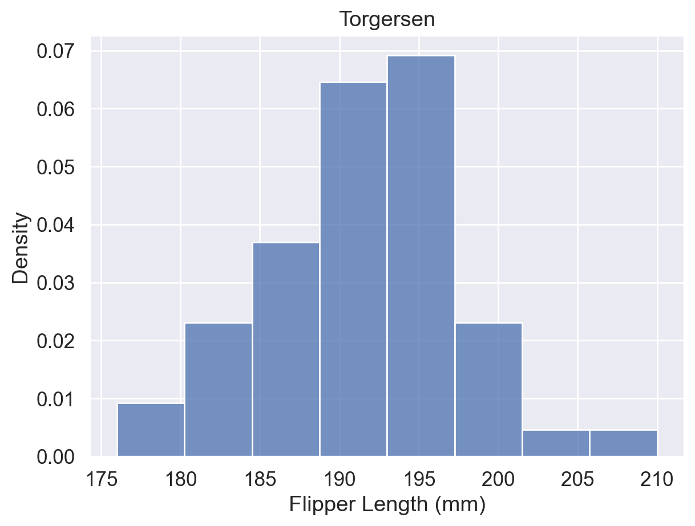
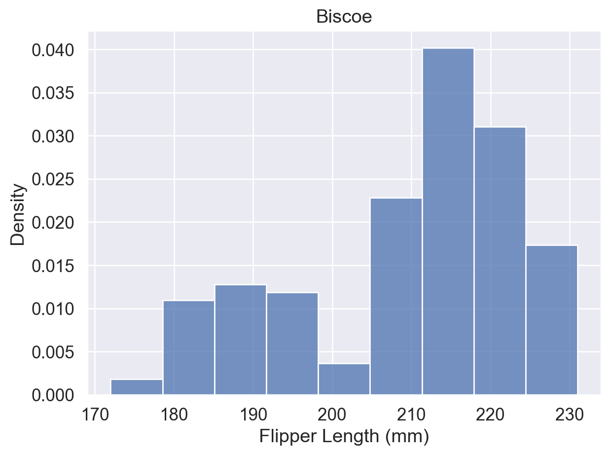
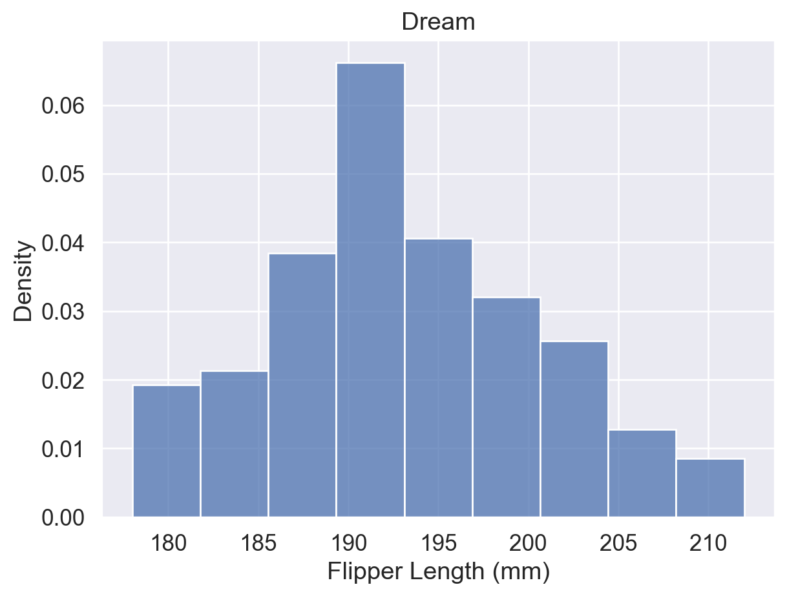
相关链接： sns.histplot() 函数用法 （查看 hue参数 ，stat参数 和 common_norm参数 ）
**
3.3 箱线图
**
箱线图（boxplot，也称为盒须图）是一种图表，用于表示数据的分布、集中趋势和离散性。
箱线图展示了数据的最小值（Min）、第一四分位数（Q1）、中位数（Q2）、第三四分位数（Q3）和最大值（Max），并用“须”来描绘数据分布的范围，超出须的点通常表示异常值。
箱线图的结构：
箱体： 从Q1延伸到Q3，代表数据的中间50%。
箱内的线： 表示中位数（Q2）。
须 (whisker)： 从Q1和Q3向外延伸，通常到达离Q1和Q3 1.5倍IQR（四分位距）以内的最小 (Min) 和最大值 (Max)。
异常值 (outlier)： 超过须的点被单独标记出来，显示数据中的极端值。


箱线图 vs. 直方图

总结来说，【箱线图】适合【快速识别数据 大致分布 和 异常值】，而【直方图】则更适合了解【具体区间内的频率分布】。
# 用 sns.boxplot() 函数绘制箱线图
sns.boxplot(data=df, x='flipper_length_mm', y='island',hue='sex')
#👆绘制不同岛屿上雌雄企鹅各自的箱线图
plt.show()
# 调整【fliersize参数】来修改异常点的大小
sns.boxplot(data=df, x='flipper_length_mm', y='island', hue='sex'
,fliersize=8 # 异常点的大小设置为 8 个单位。
)
plt.show()
# 调整【whis参数】来修改须的长度范围
sns.boxplot(data=df, x='flipper_length_mm', y='island', hue='sex'
,fliersize=8 # 异常点的大小设置为 8 个单位。
,whis=2 # 须分别延伸至距离 Q1 和 Q3【2倍IQR】的范围。默认为 1.5倍IQR。
# 注：此处 whis 设置为 2 之后，须 (whisker) 已经涵盖了所有数据值，图上也就没有异常点了。
)
plt.show()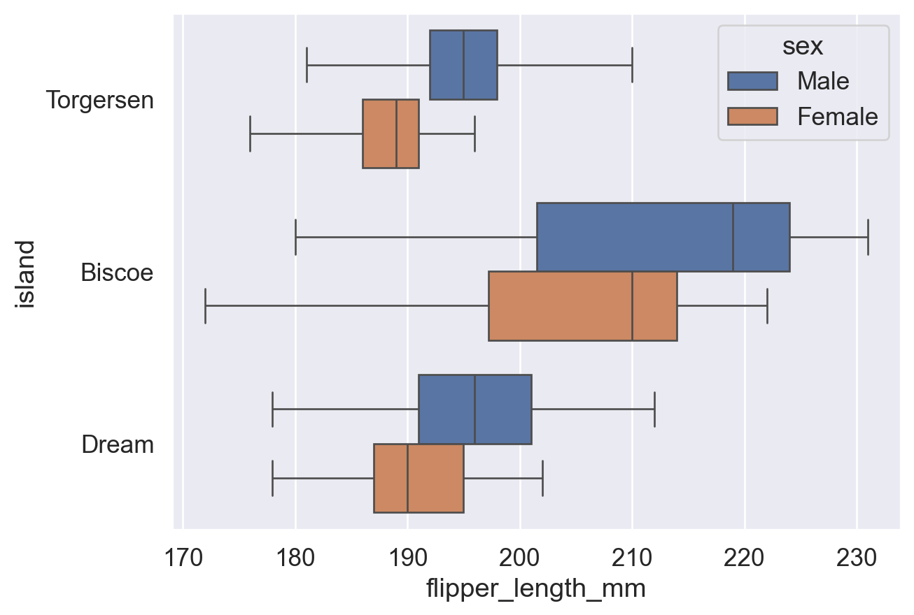
相关链接：sns.boxplot() 函数用法 (查看 fliersize参数 和 whis参数 )
**
3.4 小提琴图
**
小提琴图类似箱线图和直方图，也能直观显示数据的大致分布情况以及中位数。
不同于箱线图，小提琴图不能直观显示异常点；而不同于直方图，小提琴图的分布呈现光滑的曲线而非逐个 bins。
需要注意的是，当数据总量很少的时候，小提琴图的光滑曲线可能误导读者，可以选择直方图或者箱线图。
# 用 sns.violinplot() 函数绘制小提琴图
sns.violinplot(data=df, y='island', x='flipper_length_mm', hue='sex')
plt.show()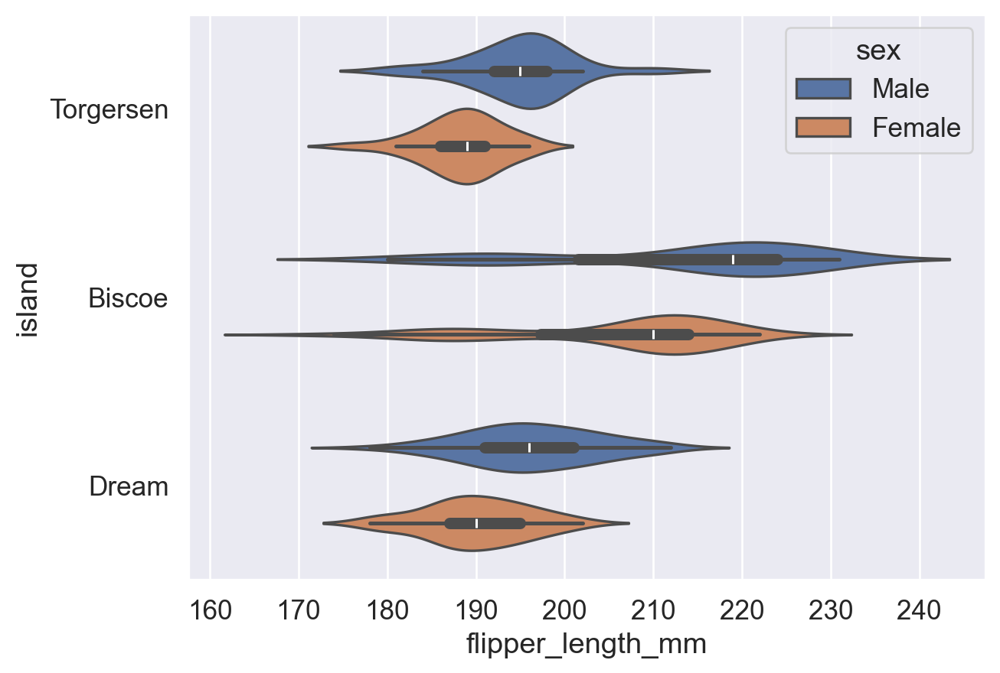
# 通过【split参数】控制不同分组的图是否合并在一起
sns.violinplot(data=df, y='island', x='flipper_length_mm', hue='sex'
,split=True # 加入 split=True，让不同分组（不同性别）的图合并在一起，便于观察
)
plt.show()
相关链接：sns.violinplot() 函数用法 (查看 split参数 )
**
3.5 散点图 & 分簇散点图
**
分布散点图 (strip plot) 用于显示数据分布情况。不同于前面提到的几种描绘分布情况的图，
散点图不是用一个图形来描述整体分布情况，而是画出所有数据点，每个数据点都显示为一个圆点。
但当同一个值上的数据点过多时，圆点可能重叠。
注意：
strip plot 用于显示数据的分布情况（一个数据在不同区间内有多少量），
和用于显示数据变化趋势（一个数据随另一个数据变化而呈现什么样的变化趋势）的 scatter plot 不同。

# 用 sns.stripplot() 函数绘制散点图
sns.stripplot(data=df,x='flipper_length_mm',y='island',hue='sex')
plt.show()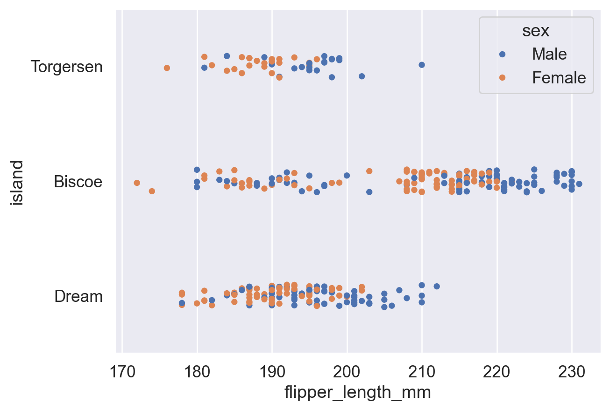
# 用 sns.swarmplot() 函数绘制分簇散点图
sns.swarmplot(data=df,x='flipper_length_mm',y='island',hue='sex')
plt.show()
相关链接：
sns.stripplot() 函数
sns.swarmplot() 函数
**
相关链接合集
**
总体链接：
Python3 教程文档 (中文) (查看内置函数用法等)
Pandas库 教程文档 (DataFrame)
Matplotlib库 教程文档 (plt)
Seaborn库 教程文档 (barplot)
sns.barplot()函数（用 Seaborn 绘制 柱状图）
sns.countplot()函数 （用 Seaborn 绘制 计数图）修改图表主题风格：
plt.xticks()函数 （ kwargs (keyword argument) 栏目中写了如何旋转刻度标签）
sns.set()函数 （同sns.set_theme()函数）
sns.set_theme()函数 （设置 Seaborn 绘图的全局主题风格）
ax.set()方法 （Matplotlib 中 对于特定图表 ax 设置标题、轴标签等元素的方法）修改图例：
sns.move_legend()函数 （Seaborn 中 移动图例的函数）（查看 obj参数 和 loc参数 的用法）
matplotlib.axes.Axes.legend()函数 （Matplotlib 中 设置图例的函数，其指令也适用于sns.move_legend()）（查看 loc参数 ，ncols参数 和 bbox_to_anchor参数 的用法）修改图表颜色：
Seabornsns.color_palette()函数 （查看 palette参数 预设调色盘名称表）
Matplotlib 预命名颜色一览
Matplotlib Colormap 一览
Matplotlib Colormap 使用介绍
w3schools 颜色提取器 （查看任意颜色的十六进制代码）其他图表：
sns.pointplot()函数用法 （点线图画法）
sns.histplot()函数用法 （频率分布直方图画法）（查看 hue参数 ，stat参数 和 common_norm参数 ）
sns.boxplot()函数用法 （箱线图画法） (查看 fliersize参数 和 whis参数 )
sns.violinplot()函数用法 （小提琴图画法）
sns.stripplot()函数 （分布散点图画法）
sns.swarmplot()函数 （分簇分布散点图画法）教材书 Fundamentals of Data Visualization (Wilke, 2019) ：
6.1 Bar Plot (旋转的文字刻度不方便阅读，应当横过来排版)
17. The Principle of Proportional Ink （比例标记的原则：图形大小比例应当和数据真实的比例一样。e.g. 柱状图的柱子应当从 0 开始）
**
**